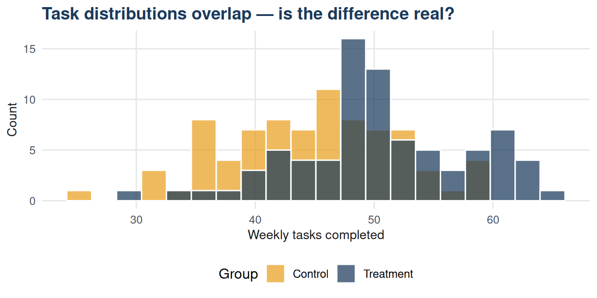

| Research question | Null hypothesis H0 | Alternative hypothesis H1 |
|---|---|---|
| Did the workflow tool increase weekly tasks completed? | Mean tasks: treatment = control | Mean tasks: treatment > control |
| Does customer satisfaction differ between regions? | Mean satisfaction: all regions equal | Mean satisfaction: not all regions equal |
| Is the proportion of defective items below 5%? | Proportion defective >= 0.05 | Proportion defective < 0.05 |
| Do the two product versions have different conversion rates? | Conversion rate A = conversion rate B | Conversion rate A ≠ conversion rate B |
20 Chapter 20: Null and Alternative Hypotheses, Type I and Type II Errors
20.1 Learning objectives
By the end of this chapter, the student should be able to:
- State a null and alternative hypothesis for a given research question.
- Explain the logic of hypothesis testing and what it means to reject the null.
- Distinguish between Type I and Type II errors and give examples of each.
- Explain the trade-off between Type I and Type II error rates.
- Describe the consequences of each error type in a business context.
20.2 Introduction
A confidence interval estimates a parameter and communicates uncertainty. Hypothesis testing asks a different question: is there sufficient evidence to reject a specific claim about a population?
This framework is used to evaluate almost every business decision that depends on data: whether a new product performs better than the existing one, whether a training programme improves performance, whether two market segments differ in their purchasing behaviour. The logic is simple but its implications are often misunderstood.
The dataset for this unit contains productivity records for 160 employees, half of whom received a new workflow tool (treatment group) and half of whom did not (control group). We use this to introduce the hypothesis testing framework before applying formal tests in Part 7.
20.3 The hypothesis testing framework
Hypothesis testing begins with a question: does the observed data provide sufficient evidence against a specific claim? The claim being evaluated is the null hypothesis, written \(H_0\). The position that would be adopted if the null were rejected is the alternative hypothesis, written \(H_1\) or \(H_a\).
The null hypothesis always takes the form of no effect, no difference, or no relationship. It is the default position that will be maintained unless the data provide convincing evidence against it.
20.4 The logic of hypothesis testing
Hypothesis testing does not prove the null hypothesis true or false. It assesses whether the observed data would be surprising if the null hypothesis were true.
The procedure is as follows:
- State \(H_0\) and \(H_1\).
- Collect data.
- Compute a test statistic measuring how far the observed data lie from what \(H_0\) predicts.
- Calculate the probability of observing a result this extreme (or more extreme) if \(H_0\) were true. This is the p-value.
- If the p-value is below a pre-specified threshold \(\alpha\), reject \(H_0\).
The logic resembles a proof by contradiction: assume \(H_0\) is true, then ask whether the data are consistent with that assumption. If the data are highly unlikely under \(H_0\), the assumption is rejected.
20.5 Observing the data before choosing a test
Code
library(dplyr)
group_summary <- df |>
group_by(group) |>
summarise(
n = n(),
mean_tasks = round(mean(weekly_tasks), 2),
sd_tasks = round(sd(weekly_tasks), 2),
mean_errors = round(mean(weekly_errors), 2),
mean_sat = round(mean(satisfaction), 2)
)
knitr::kable(group_summary,
col.names = c("Group", "n", "Mean tasks", "SD tasks",
"Mean errors", "Mean satisfaction"),
caption = "Table 20.2: Descriptive summary by group") |>
kableExtra::kable_styling(bootstrap_options = c("striped", "hover"),
full_width = FALSE)| Group | n | Mean tasks | SD tasks | Mean errors | Mean satisfaction |
|---|---|---|---|---|---|
| Control | 80 | 44.84 | 7.18 | 4.21 | 6.92 |
| Treatment | 80 | 50.51 | 7.32 | 2.89 | 7.56 |
The treatment group appears to have a higher mean for tasks completed and lower errors. But is this difference large enough to be convincing evidence of a real effect, or could it plausibly have arisen by chance even if the tool made no difference? That is precisely the question hypothesis testing addresses.

The distributions overlap considerably. Visual inspection alone cannot answer whether the observed difference is a genuine treatment effect or sampling variation.
20.6 Type I and Type II errors
A hypothesis test can lead to two kinds of correct decision and two kinds of error.
| Decision made | H0 is true (no effect) | H0 is false (real effect) |
|---|---|---|
| Reject H0 | Type I error (false positive): alpha | Correct decision: 1 - beta (power) |
| Fail to reject H0 | Correct decision: 1 - alpha | Type II error (false negative): beta |
A Type I error (false positive) occurs when \(H_0\) is rejected even though it is true. The probability of this error is \(\alpha\), the significance level. Choosing \(\alpha = 0.05\) means that, in the long run, 5% of tests will incorrectly reject a true null hypothesis.
A Type II error (false negative) occurs when \(H_0\) is not rejected even though it is false. The probability of this error is \(\beta\). The power of a test is \(1 - \beta\): the probability of correctly detecting a real effect.
20.7 Business consequences of each error type
| Context | Type I consequence (false positive) | Type II consequence (false negative) |
|---|---|---|
| Workflow tool pilot | Roll out a tool that does not improve productivity. Wasted expenditure. | Fail to roll out a tool that genuinely improves productivity. Missed opportunity. |
| Quality control | Reject a good batch. Unnecessary waste and rework costs. | Accept a defective batch. Defective products reach customers. |
| Drug clinical trial | Approve a drug that is not effective. Patients receive no benefit; resources wasted. | Reject an effective drug. Patients denied a beneficial treatment. |
| A/B test: marketing campaign | Adopt a campaign that did not genuinely outperform. Budget misdirected. | Discard a campaign that genuinely outperformed. Revenue opportunity lost. |
20.8 The trade-off between error types
Reducing \(\alpha\) (the Type I error rate) increases \(\beta\) (the Type II error rate), for a fixed sample size. Making it harder to reject \(H_0\) reduces false positives but increases false negatives. The only way to reduce both simultaneously is to increase the sample size.
| Alpha | Type I rate | Type II rate | Typical use |
|---|---|---|---|
| 0.10 | Higher | Lower | Exploratory research; low cost of false positives. |
| 0.05 | Standard | Standard | Standard scientific and business default. |
| 0.01 | Lower | Higher | High-stakes decisions; regulatory approval; patient safety. |
The choice of \(\alpha\) should be made before data are collected and should reflect the relative costs of the two error types in the specific context.
20.9 Worked example
Note
Scenario. The workflow tool pilot produced the results in Table 20.2. Before running a formal test, a manager wants to understand what errors are possible and what each would mean.
| Decision | If H0 is true (no real effect) | If H0 is false (real effect) |
|---|---|---|
| Reject H0 (conclude tool helps) | Type I error: tool actually makes no difference, but we roll it out. Cost: implementation budget spent for no gain. | Correct decision: tool genuinely improves productivity by ~5.7 tasks/week. We deploy it. |
| Fail to reject H0 (conclude no evidence of effect) | Correct decision: we avoided a costly rollout of an ineffective tool. | Type II error: we miss a genuine improvement. Opportunity cost of not deploying. |
The formal test - a two-sample t-test - is covered in Chapter 23. This chapter establishes the framework for interpreting whatever that test produces.
20.10 Summary
Hypothesis testing evaluates whether observed data provide sufficient evidence to reject a null hypothesis. The null hypothesis \(H_0\) represents no effect or no difference; the alternative \(H_1\) represents the conclusion that would be adopted if \(H_0\) is rejected.
Two errors are possible: a Type I error (rejecting a true \(H_0\)) with probability \(\alpha\), and a Type II error (failing to reject a false \(H_0\)) with probability \(\beta\). These error rates are inversely related for a fixed sample size. The appropriate \(\alpha\) depends on the relative costs of each error type in the specific decision context.
20.11 Key terms
| Term | Definition |
|---|---|
| Null hypothesis (H0) | The default claim of no effect, no difference, or no relationship; the hypothesis being tested. |
| Alternative hypothesis (H1) | The conclusion adopted if H0 is rejected; represents the research claim or expected effect. |
| Type I error | Rejecting H0 when it is in fact true; a false positive. Probability = alpha. |
| Type II error | Failing to reject H0 when it is in fact false; a false negative. Probability = beta. |
| Significance level (alpha) | The pre-specified maximum acceptable probability of a Type I error; typically 0.05. |
| Power (1 - beta) | The probability of correctly rejecting a false H0; equals 1 minus the Type II error rate. |
20.12 Exercises
A pharmaceutical company tests a new drug. State \(H_0\) and \(H_1\). Which error type is more costly in this context, and how should this affect the choice of \(\alpha\)?
Using Table 20.2, what are the null and alternative hypotheses for comparing mean weekly tasks between treatment and control groups? Is this a one-tailed or two-tailed test?
A quality manager sets \(\alpha = 0.01\) for a test of whether a production line’s defect rate exceeds 3%. What does this mean in practice? What is the risk of setting \(\alpha\) this low?
A startup tests whether its new app feature increases daily active users. It sets \(\alpha = 0.10\). A competitor uses \(\alpha = 0.01\) for the same type of test. What does each company value more: avoiding false positives or avoiding false negatives?
Explain why increasing the sample size is the only way to simultaneously reduce both Type I and Type II error rates, while holding the other constant.